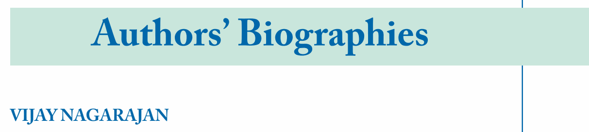
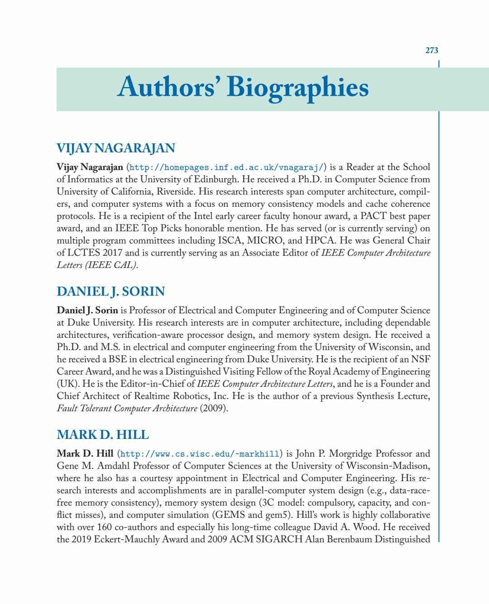
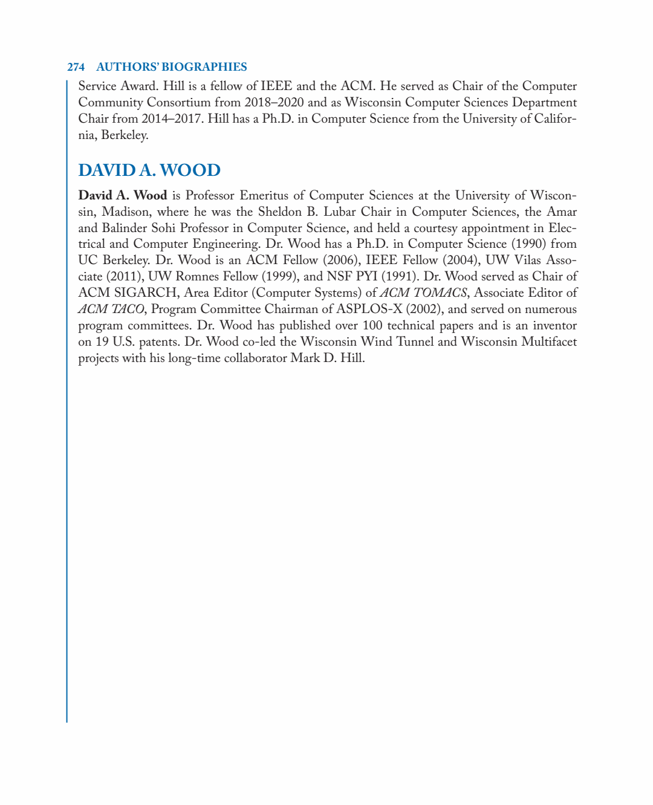

AUTHORS / 中英对照
作者简介
Authors’ Biographies
原书第 273 页PDF 295

ENGLISHAuthors’ Biographies
中文作者简介
ENGLISHVIJAY NAGARAJAN
中文VIJAY NAGARAJAN
ENGLISHVijay Nagarajan (http://homepages.inf.ed.ac.uk/vnagaraj/) is a Reader at the School of Informatics at the University of Edinburgh. He received a Ph.D. in Computer Science from University of California, Riverside. His research interests span computer architecture, compilers, and computer systems with a focus on memory consistency models and cache coherence protocols. He is a recipient of the Intel early career faculty honour award, a PACT best paper award, and an IEEE Top Picks honorable mention. He has served (or is currently serving) on multiple program committees including ISCA, MICRO, and HPCA. He was General Chair of LCTES 2017 and is currently serving as an Associate Editor of IEEE Computer Architecture Letters (IEEE CAL).
中文Vijay Nagarajan（http://homepages.inf.ed.ac.uk/vnagaraj/）是爱丁堡大学信息学院的 Reader（英国高校高级教职）。他在加利福尼亚大学河滨分校获得计算机科学博士学位。其研究涉及计算机体系结构、编译器和计算机系统，重点关注内存一致性模型与缓存一致性协议。他曾获 Intel 青年教师荣誉奖、PACT 最佳论文奖和 IEEE Top Picks 荣誉提名，并曾经或正在担任 ISCA、MICRO、HPCA 等多个会议的程序委员会委员。他担任了 LCTES 2017 大会主席，目前担任 IEEE Computer Architecture Letters（IEEE CAL）副编辑。
ENGLISHDANIEL J. SORIN
中文DANIEL J. SORIN
ENGLISHDaniel J. Sorin is Professor of Electrical and Computer Engineering and of Computer Science at Duke University. His research interests are in computer architecture, including dependable architectures, verification-aware processor design, and memory system design. He received a Ph.D. and M.S. in electrical and computer engineering from the University of Wisconsin, and he received a BSE in electrical engineering from Duke University. He is the recipient of an NSF Career Award, and he was a Distinguished Visiting Fellow of the Royal Academy of Engineering (UK). He is the Editor-in-Chief of IEEE Computer Architecture Letters, and he is a Founder and Chief Architect of Realtime Robotics, Inc. He is the author of a previous Synthesis Lecture, Fault Tolerant Computer Architecture (2009).
中文Daniel J. Sorin 是杜克大学电气与计算机工程及计算机科学教授。他的研究方向为计算机体系结构，包括可靠体系结构、面向验证的处理器设计和存储系统设计。他在威斯康星大学获得电气与计算机工程博士和硕士学位，在杜克大学获得电气工程理学学士（BSE）学位。他曾获美国国家科学基金会 CAREER 奖，并曾担任英国皇家工程院杰出访问学者。他是 IEEE Computer Architecture Letters 的主编，也是 Realtime Robotics, Inc. 的创始人和首席架构师。他此前还撰写了 Synthesis 丛书著作《容错计算机体系结构》（2009 年）。
ENGLISHMARK D. HILL
中文MARK D. HILL
ENGLISHMark D. Hill (http://www.cs.wisc.edu/~markhill) is John P. Morgridge Professor and Gene M. Amdahl Professor of Computer Sciences at the University of Wisconsin-Madison, where he also has a courtesy appointment in Electrical and Computer Engineering. His research interests and accomplishments are in parallel-computer system design (e.g., data-racefree memory consistency), memory system design (3C model: compulsory, capacity, and conflict misses), and computer simulation (GEMS and gem5). Hill’s work is highly collaborative with over 160 co-authors and especially his long-time colleague David A. Wood. He received the 2019 Eckert-Mauchly Award and 2009 ACM SIGARCH Alan Berenbaum Distinguished
中文Mark D. Hill（http://www.cs.wisc.edu/~markhill）是威斯康星大学麦迪逊分校计算机科学系的 John P. Morgridge 讲席教授和 Gene M. Amdahl 讲席教授，并兼任电气与计算机工程系教授。他的研究兴趣和成果涉及并行计算机系统设计（例如无数据竞争的内存一致性）、存储系统设计（3C 模型：强制不命中、容量不命中和冲突不命中），以及计算机仿真（GEMS 和 gem5）。Hill 十分重视合作，合作者超过 160 人，其中包括长期同事 David A. Wood。他获得了 2019 年 Eckert–Mauchly 奖和 2009 年 ACM SIGARCH Alan Berenbaum 杰出
查看 原书第 273 页 的完整原版面（PDF 295）

原书第 274 页PDF 296
ENGLISHService Award. Hill is a fellow of IEEE and the ACM. He served as Chair of the Computer Community Consortium from 2018–2020 and as Wisconsin Computer Sciences Department Chair from 2014–2017. Hill has a Ph.D. in Computer Science from the University of California, Berkeley.
中文服务奖。Hill 是 IEEE Fellow 和 ACM Fellow，曾于 2018—2020 年担任计算社区联盟（Computing Community Consortium）主席，于 2014—2017 年担任威斯康星大学计算机科学系主任。他拥有加利福尼亚大学伯克利分校计算机科学博士学位。
ENGLISHDAVID A. WOOD
中文DAVID A. WOOD
ENGLISHDavid A. Wood is Professor Emeritus of Computer Sciences at the University of Wisconsin, Madison, where he was the Sheldon B. Lubar Chair in Computer Sciences, the Amar and Balinder Sohi Professor in Computer Science, and held a courtesy appointment in Electrical and Computer Engineering. Dr. Wood has a Ph.D. in Computer Science (1990) from UC Berkeley. Dr. Wood is an ACM Fellow (2006), IEEE Fellow (2004), UW Vilas Associate (2011), UW Romnes Fellow (1999), and NSF PYI (1991). Dr. Wood served as Chair of ACM SIGARCH, Area Editor (Computer Systems) of ACM TOMACS, Associate Editor of ACM TACO, Program Committee Chairman of ASPLOS-X (2002), and served on numerous program committees. Dr. Wood has published over 100 technical papers and is an inventor on 19 U.S. patents. Dr. Wood co-led the Wisconsin Wind Tunnel and Wisconsin Multifacet projects with his long-time collaborator Mark D. Hill.
中文David A. Wood 是威斯康星大学麦迪逊分校计算机科学系荣休教授；此前曾任该校 Sheldon B. Lubar 计算机科学讲席教授、Amar and Balinder Sohi 计算机科学教授，并兼任电气与计算机工程系教授。Wood 博士于 1990 年在加利福尼亚大学伯克利分校获得计算机科学博士学位。他获选 ACM Fellow（2006）、IEEE Fellow（2004）、威斯康星大学 Vilas Associate（2011）、Romnes Fellow（1999），以及 NSF Presidential Young Investigator（1991）。他曾担任 ACM SIGARCH 主席、ACM TOMACS 计算机系统领域编辑、ACM TACO 副编辑、ASPLOS-X（2002）程序委员会主席，并任多个会议的程序委员会委员。Wood 博士发表了 100 余篇技术论文，是 19 项美国专利的发明人之一。他与长期合作者 Mark D. Hill 共同领导了 Wisconsin Wind Tunnel 和 Wisconsin Multifacet 项目。
查看 原书第 274 页 的完整原版面（PDF 296）
